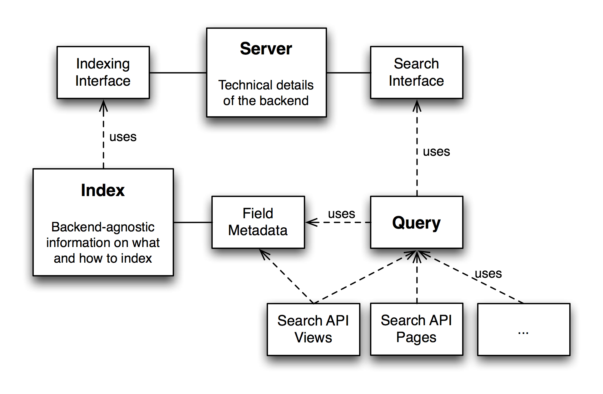
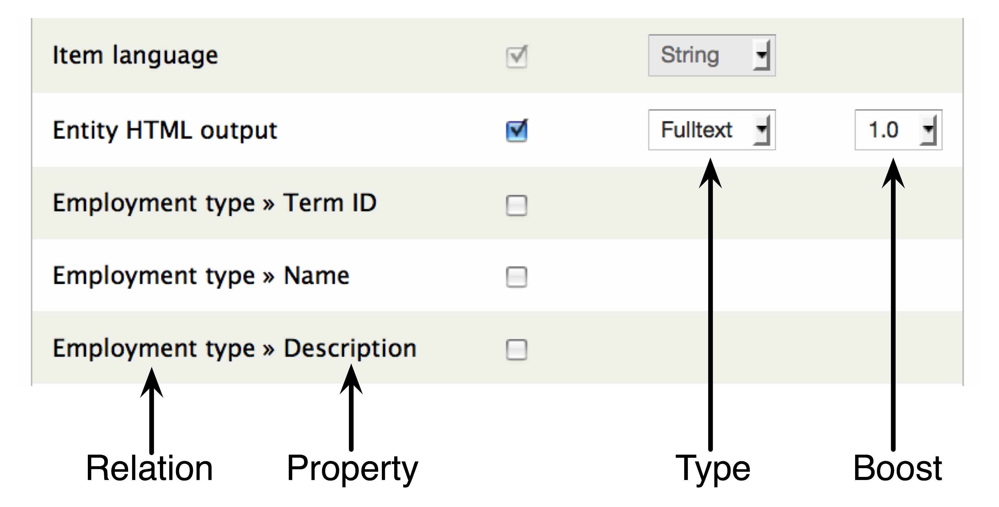
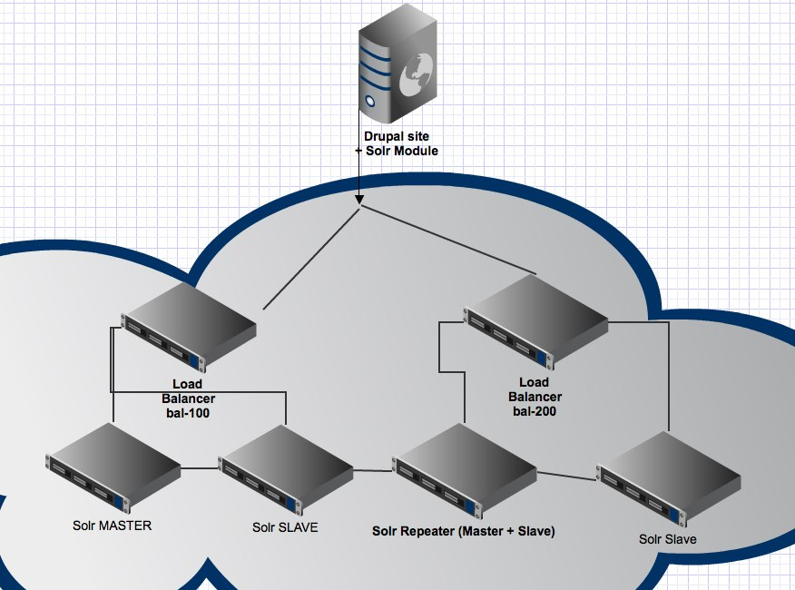
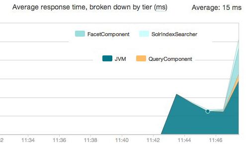

Let the battle begin!
Search API vs Apachesolr
Drupal Dev Days
Drupal Search and Solr Wizardry

Matthias Hutterer
Nick Veenhof
Introduction
Nick Veenhof

Matthias Hutterer
- Drupal contributions including Email Field and Taxonomy Manager
- Working at epiqo
- Building powerful searches for job portals
- Main motivation for a new Search API
Search Api
About
- Framework for easily creating searches
- Abstracts from data sources and backend implementations
- Large ecosystem with extensions, e.g. backends
- Facet API integration
- Heavily based on Entity API
- Provides metadata
- Used for index and server configurations
Basic Structure
Index any data
- Different datasources
- One datasource: entities
- Based on Entity API:
- Each property can be indexed
- Properties of related entities can be indexed
How to configure your index - Fields
Search API Views
- Full Views support
- Display any property of an entity
- Use any indexed field as filter, argument or sort
- Most code based on Entity API's views integration
- By default: data retrieved via entity load
- Can be bypassed ("Retrieve data from Solr" setting in server)
- Alternative: Search API pages
Extensions
- Backends
- Apache Solr
- Database
- Fuzzy Search
- Xapian
- Elasticsearch (But we need you!)
- ...
Extensions
- Features
- Search API Autocomplete
- Attachments
- Saved Searches
- Location
- Pretty Facets Paths
- Slider (in progress)
- ...
- Current dev: Search API Statistics (GSOC Project)
Search Api Recipes
API Overview
- CRUD hooks for indexes and servers
- Hooks for adding
- data sources
- backends
- data alterations
- processors
- Hook fired when indexing items
- Hook fired when executing a search
Implementing a Backend - Part I
/**
* Implements hook_search_api_service_info().
*/
function search_api_solr_search_api_service_info() {
$services['search_api_solr_service'] = array(
'name' => t('Solr service'),
'class' => 'SearchApiSolrService',
'description' => t('Index items using an Apache Solr search server.'),
);
return $services;
}
Implementing a Backend - Part II
/**
* Search service class using Solr server.
*/
class SearchApiSolrService extends SearchApiAbstractService {
public function configurationForm(array $form, array &$form_state) {}
public function supportsFeature($feature) {}
public function addIndex(SearchApiIndex $index) {}
public function removeIndex($index) {}
public function indexItems(SearchApiIndex $index, array $items) {}
public function deleteItems($ids = 'all', SearchApiIndex $index = NULL) {}
public function search(SearchApiQueryInterface $query) {}
}
How to index custom fields
/**
* Implements hook_entity_property_info_alter().
*/
function example_entity_property_info_alter(&$info) {
$info['node']['properties']['example_random_number'] = array(
'type' => 'integer',
'label' => t('Random number'),
'computed' => TRUE,
'getter callback' => 'example_property_random_number_getter_callback',
);
}
/**
* Getter callback for a random number between 1 and 100.
*/
function example_property_random_number_getter_callback($item) {
return mt_rand(1, 100);
}
Search API Query Alter
/**
* Implements hook_search_api_query_alter().
*/
function example_search_api_query_alter(SearchApiQueryInterface $query) {
$index = $query->getIndex();
if ($index->machine_name == "my_search") {
$query->condition('my_field', 'condition');
}
}
Search API Solr Query Alter
/**
* Implements hook_search_api_solr_query_alter().
*/
function example_search_api_solr_query_alter(array &$call_args, SearchApiQueryInterface $query) {
// Change the Solr request handler.
$call_args['params']['defType'] = 'edismax';
// Wrap search wards with wildcards for partial matches.
// Note: only excerpt of full code.
$key_array = array();
foreach (explode(' ', $query->getOriginalKeys()) as $k) {
$key_array[] = "*$k*";
}
$call_args['query'] = implode(' ', $key_array);
}
Apachesolr Recipes
Apache Solr
- Open Source Enterprise Search Platform
- Apache Foundation
- Full-text search, highlighting, faceted search, clustering, rich document handling
- Distributed
- Replication/scalable
- Java
- REST HTTP and answers in XML/JSON and some others
- Not Relational
How to create a Range/Slider facet
- Facet Api
- Facet Api Slider
- Works for any numeric type
- Code is pending for having date sliders
- Quirk : In the facet, manually put the query type on Numeric Range when selecting the Slider widget
How to index locations
- Apachesolr geo, Apachesolr location
- Theme your results to have maps based on those locations.
- TIP: Add custom code to get nice range facets
How to index attachments
- Apachesolr Attachments
- Refactored
- Recognized as an entity linked to the node entity
- Local or remote extractions
- Tip: Attachments to other entities? Easy to link them in custom code
- Quirk: No media support, we need help! Someone? Anyone? :)
How to have a common index between Drupal 6 and 7
- Apachesolr Multisitesearch
- Refactored
- Small module, most of it is in the core module.
- 7.x-1.x API and schema = 6.x-3.x API and schema, meaning easier maintenance of custom code
- Tip: Theme the results so you know where they are coming from
How can I reduce the http request when using thumbnails
function HOOK_apachesolr_index_document_build(ApacheSolrDocument $document, $entity, $env_id) {
// Warning : Simplified, you need more checks!
// Encode the image to base64
$img64 = base64_encode_image($entity->field_image['filename']);
// Add it to the binary dynamic index field
$document->setMultiValue('xm_field_img64', $img64);
}
function HOOK_apachesolr_query_alter(DrupalSolrQueryInterface $query) {
$query->addParam('fl', 'xm_field_img64');
}
How can I create my own Query object?
New query object and how to make a query + using the fq/filters
$solr = apachesolr_get_solr();
$query = apachesolr_drupal_query("custom", array('q' => 'mykeys'), 'sort_label asc', 'search/path');
$query->setSolrsort('sort_name', 'desc');
$query->addFilter('bundle', (article OR page));
$query->removeFilter('bundle');
$query->addParam('fq', "bundle:(article OR page)");
$query->addParam('fq', "field_date:[1970-12-31T23:59:59Z TO NOW]");
$resp = $query->search();
Solr internals
What do all these FQ, FL. params mean?
-
Query (q)
select/?q=Superhero
http://lucene.apache.org/core/3_6_0/queryparsersyntax.html -
sort, start, rows
select/?q=Superhero&start=0&rows=10&sort=sort_name+asc
Can sort on integers, but for strings you need to use sort_yourfield -
Filter Query (fq)
select/?q=Superhero&fq=bundle:person&fq=attribute:cape -
Fields (to return) (fl)
select/?q=Superhero&fl=id,entity_id,name,attribute,score,... -
Highlighting (hl, hl.q, hl.fl)
select/?q=Superhero&hl=true&hl.q=super&hl.fl=name,content,comments
Wait, I've seen many others..? Dismax/Edismax
-
defType
select/?q=Superhero AND evil&defType=edismax -
Alternative Query (q.alt)
select/?q.alt=bundle:person
Can only be used if your q param is empty or not specified. -
Query fields (qf)
select/?q=Superhero&qf=teaser^2.0
Feld type boosting. -
Phrase Fields (pf)
select/?q=Robin Hood&pf=name^10
Document type boosting.
How to use Elevate.xml
<elevate>
<query text="Superman"><doc id="HASH/node/248813" /></query>
</elevate>
Why are the schema and solrconfig.xml different in Search Api Solr and Apachesolr?
http://drupal.org/sandbox/cpliakas/1600962
How can I Debug Solr
select/?q=Robin Hood&somecomplexthing&debugQuery=on&debug=on
select/?q=Robin Hood&somecomplexthing&indent=true
admin/analysis.jsp?highlight=on
Jetty Console (live query log when starting with "java start.jar")
How can I enable replication in Solr?
How can I enable replication in Solr?
#solrcore.properties file
enable.master=false
enable.slave=true
poll_time=00:02:00
master_core_url=http://localhost:8983/solr/MYMASTERCORE
This file or support is not yet committed to both projects,
but the initiative is making sure it will
How can I monitor my Solr?
New Relic + mbeans (nagios, ...)
Performance & Drupal
Performance testing Acquia Search
- MergePolicies
- LogByteSizeMergePolicy (1.4)
- LogDocMergePolicy (1.4)
- TieredMergePolicy (3.x)
- Jmeter/Apache Access Logs
- CentOS 5 - 2.6.18-xenU-ec2-v1.0 vs Ubuntu 10.04.4 - 2.6.32-341-ec2
Specifications of the Master
Large Instance (M1.large)7.5 GB memory
4 EC2 Compute Units (2 virtual cores with 2 EC2 Compute Units each)
Specifications of the Slave
High-CPU Medium Instance (C1.medium)1.7 GB of memory
5 EC2 Compute Units (2 virtual cores with 2.5 EC2 Compute Units each)
Performance Graphs (Buytaert.net)
Performance Graphs
Performance conclusions
- Keep LogByteMergePolicy with factor 4
- TieredMergePolicy very interesting. Completely different
- Solr 3.5 faster than Solr 1.4.1
- Don't rely on default settings
- Set Lucene version explicitly
Future of Solr Search
Joint forces
Joint forces
- Apache Solr Common Configurations
- Acquia Search for Search API
- No plans Drupal 8 core
- GSOC Project Search API Statistics
- More geo and mapping integration
- Search Api with Apachesolr backend??
- Ideas?